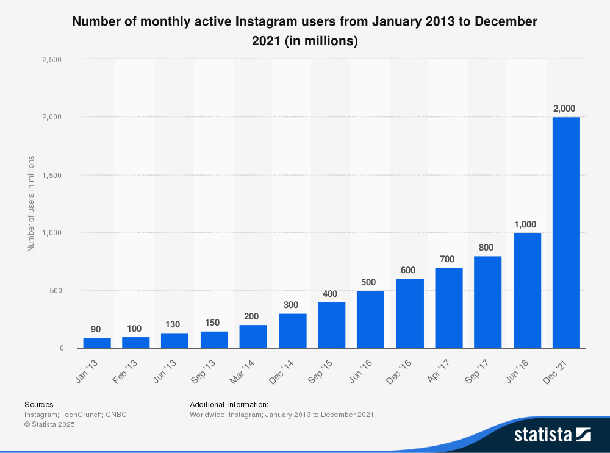
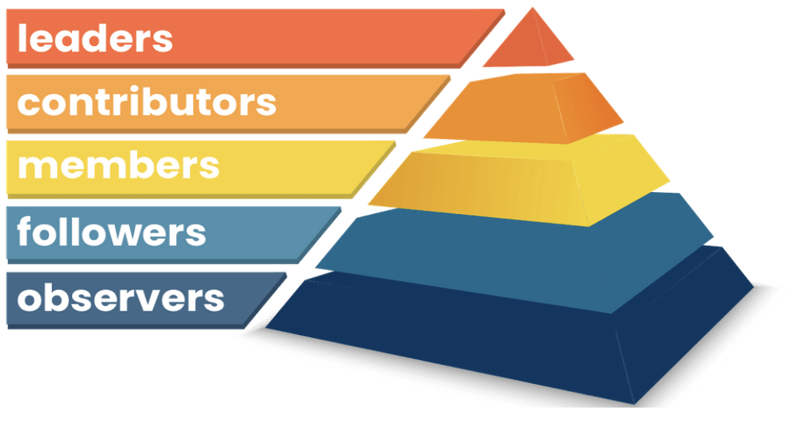
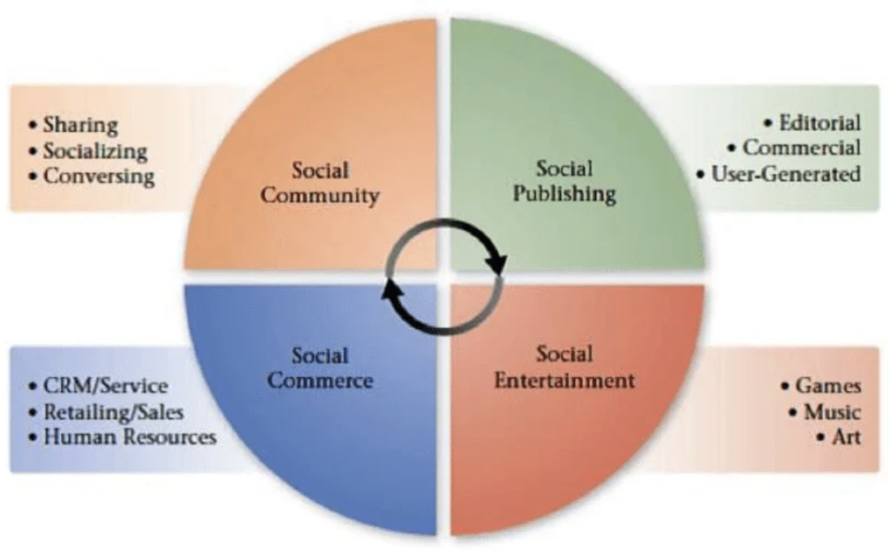
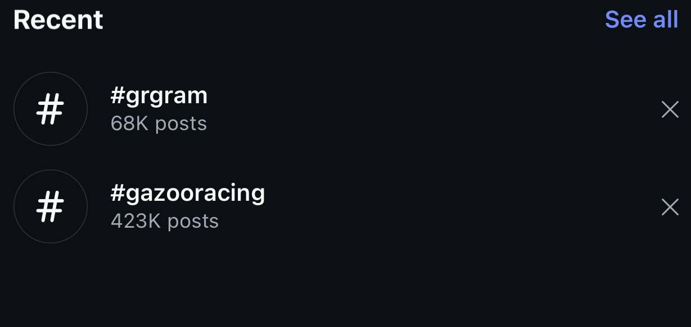
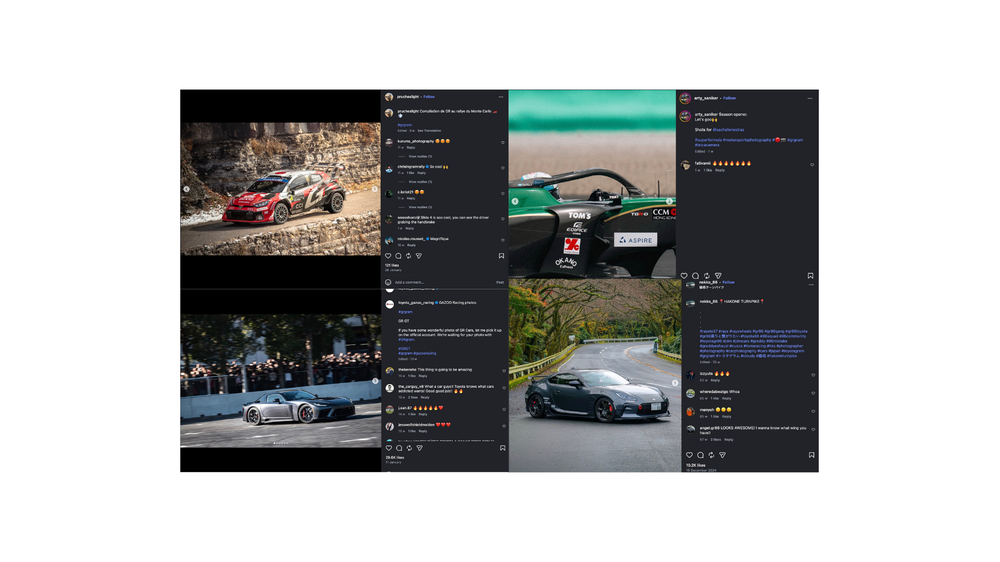

1. Brand Overview & Mission
Toyota Gazoo Racing (TGR) is the global motorsport and performance division of Toyota Motor Corporation, established in 2007 and formally unified under the "Gazoo Racing" identity in 2015 (Toyota, 2023). The brand operates at the intersection of motorsport excellence and consumer automotive engineering, competing in the World Rally Championship (WRC), World Endurance Championship (WEC), and Dakar Rally, while producing road-legal performance vehicles such as the GR Yaris, GR Corolla, and GR Supra.
Mission Statement
TGR's mission is rooted in the philosophy of "making ever-better cars" through motorsport (Toyota, 2023). The brand leverages competitive racing as a real-world R&D laboratory, with insights directly informing the design and engineering of consumer performance vehicles. This dual identity — motorsport authenticity combined with road-car accessibility — positions TGR uniquely in the premium performance segment against competitors such as BMW M, Mercedes-AMG, and Audi Sport.
Target Audience
TGR's primary audience comprises motorsport enthusiasts aged 18–45, predominantly male (approximately 75%), with a strong presence in Europe, Japan, and North America. Secondary audiences include Toyota loyalists seeking performance upgrades, automotive content creators, and younger digital-native consumers engaging through social platforms (Statista, 2024).
2. Instagram: Platform History & Engagement Framework
Platform Evolution
Instagram was launched in October 2010 by Kevin Systrom and Mike Krieger as a photo-sharing application emphasising visual aesthetics and mobile-first design (Instagram, 2023). The platform was acquired by Facebook (now Meta) in 2012 for approximately US$1 billion, marking one of the most significant acquisitions in social media history. By 2020, Instagram pivoted towards short-form video with the launch of Reels, a strategic response to TikTok's rapid growth (Meta, 2023). Today, Instagram hosts over 2 billion monthly active users globally, making it the third-largest social network worldwide.

Chaffey & Smith's Ladder of Engagement
Chaffey and Smith's (2022) Ladder of Engagement provides a structured framework for understanding how consumers progress through increasing levels of brand interaction on digital platforms. The model comprises five ascending stages: Awareness → Interest → Interaction → Involvement → Advocacy.

Instagram's architecture uniquely supports progression through each rung: the Explore page facilitates awareness, curated feeds nurture interest, Stories and Reels enable interaction, interactive features (polls, Q&As) drive involvement, and user-generated content alongside branded hashtags cultivate advocacy (Chaffey and Smith, 2022). For TGR, Instagram represents a critical advocacy-building platform, with its hashtag ecosystem transforming passive followers into active brand ambassadors.
3. Social Media Evaluation: Tuten & Solomon's Four Zones
Tuten and Solomon's (2020) Four Zones framework categorises social media activity into four interconnected domains: Social Community, Social Publishing, Social Entertainment, and Social Commerce. Applying this model to TGR's Instagram presence reveals both strategic strengths and critical gaps.

| Zone | TGR Performance | Evidence |
|---|---|---|
| Social Community | Moderate | 9.3M followers; limited two-way dialogue; low comment-reply rate |
| Social Publishing | Strong | High-quality race imagery, team updates, consistent posting cadence |
| Social Entertainment | Very Strong | Cinematic Reels, onboard footage, behind-the-scenes Stories |
| Social Commerce | Weak | No Instagram Shop integration; no product tags; no direct-purchase pathway |
Key Insight: TGR excels in content creation (Publishing and Entertainment zones) but underperforms in community dialogue and commerce integration, representing a significant conversion opportunity gap.
4. Website Evaluation: 15-Item Likert Scale Analysis
TGR's corporate website (toyotagazooracing.com) was evaluated against a 15-item Likert scale (1–5) drawing on established web usability frameworks (Nielsen, 2006; Kent and Taylor, 1998; Dolan et al., 2019). The evaluation produced an aggregate score of 53 out of 75 (70.6%), indicating solid performance with identifiable areas for improvement.
| Criterion | Score (1–5) | Framework |
|---|---|---|
| Visual Appeal | 5 | Nielsen (2006) |
| Navigation Clarity | 4 | Nielsen (2006) |
| Load Speed | 3 | Nielsen (2006) |
| Mobile Responsiveness | 4 | Nielsen (2006) |
| Content Quality | 5 | Dolan et al. (2019) |
| Information Architecture | 4 | Nielsen (2006) |
| Dialogic Loop | 2 | Kent & Taylor (1998) |
| Usefulness of Information | 4 | Kent & Taylor (1998) |
| Ease of Interface | 4 | Kent & Taylor (1998) |
| Conservation of Visitors | 3 | Kent & Taylor (1998) |
| Generation of Return Visits | 3 | Kent & Taylor (1998) |
| Interactivity | 3 | Dolan et al. (2019) |
| Social Integration | 4 | Dolan et al. (2019) |
| E-commerce Functionality | 2 | Dolan et al. (2019) |
| Accessibility Compliance | 3 | Nielsen (2006) |
| Total | 53/75 | — |
Key Findings
The website performs strongly on visual appeal and content quality, reflecting TGR's commitment to premium brand presentation. However, dialogic loop (score: 2/5) and e-commerce functionality (score: 2/5) represent significant weaknesses, limiting the site's ability to foster meaningful two-way communication and direct revenue generation.
5. Digital Marketing Trend: User-Generated Content (UGC)
Trend Overview (2020–2024)
User-generated content has emerged as one of the most influential digital marketing trends between 2020 and 2024, driven by declining consumer trust in traditional advertising and the rise of authenticity-driven engagement (Nielsen, 2022). Research indicates that 86% of consumers consider UGC a critical factor in purchase decisions, with UGC-based campaigns generating up to 6.9 times higher engagement than brand-created content (Stackla, 2023).
TGR's UGC Strategy
With 9.3 million Instagram followers, TGR has cultivated a robust UGC ecosystem through two principal hashtag campaigns:

- #GazooRacing — over 400,000 posts, serving as the primary global brand hashtag.
- #GRgram — over 68,000 posts, functioning as a dedicated community hashtag for GR vehicle owners.

Theoretical Analysis
Cialdini's (2001) principle of social proof explains the psychological mechanism underpinning UGC's effectiveness: prospective customers observing existing owners' authentic experiences are significantly more likely to perceive the brand as trustworthy and aspirational. Furthermore, Nielsen's (2006) 90-9-1 rule — where 90% of users lurk, 9% contribute occasionally, and 1% create content consistently — highlights the disproportionate influence of TGR's active community creators in shaping overall brand perception.
Strategic Implication: TGR's hashtag strategy effectively mobilises the 1% of content creators, but lacks formal incentivisation structures to convert the 9% occasional contributors into more consistent advocates.
6. Strategic Recommendations
Based on the preceding analyses, four strategic recommendations are proposed to enhance TGR's digital marketing performance:
6.1 UGC Website Integration
Integrate a live UGC gallery on toyotagazooracing.com pulling authenticated #GazooRacing and #GRgram posts, enhancing social proof directly on the brand's owned digital property and addressing the website's weak e-commerce conversion funnel.
6.2 Formalised UGC Incentivisation
Launch a structured "GR Creator of the Month" programme offering branded merchandise, event access, or feature placements on official channels, converting Nielsen's (2006) 9% occasional contributors into consistent advocates.
6.3 Social Commerce Development
Deploy Instagram Shop integration with tagged products (merchandise, accessories, die-cast models), closing the critical commerce gap identified in the Four Zones evaluation (Tuten and Solomon, 2020).
6.4 Enhanced Two-Way Dialogue
Implement a dedicated community management protocol ensuring comment-reply rates exceed 30% and introduce weekly interactive Stories features (Q&As, polls) to strengthen the dialogic loop (Kent and Taylor, 1998).
7. References
Chaffey, D. and Smith, P.R. (2022) Digital marketing excellence: Planning, optimizing and integrating online marketing. 6th edn. London: Routledge.
Cialdini, R.B. (2001) Influence: Science and practice. 4th edn. Boston: Allyn and Bacon.
Dolan, R., Conduit, J., Frethey-Bentham, C., Fahy, J. and Goodman, S. (2019) 'Social media engagement behavior: A framework for engaging customers through social media content', European Journal of Marketing, 53(10), pp. 2213–2243.
Instagram (2023) About Instagram: Our story. Available at: https://about.instagram.com (Accessed: 15 November 2024).
Kent, M.L. and Taylor, M. (1998) 'Building dialogic relationships through the World Wide Web', Public Relations Review, 24(3), pp. 321–334.
Meta (2023) Instagram Reels: Expanding creative possibilities. Available at: https://about.meta.com (Accessed: 15 November 2024).
Nielsen, J. (2006) Participation inequality: The 90-9-1 rule for social features. Nielsen Norman Group. Available at: https://www.nngroup.com (Accessed: 15 November 2024).
Nielsen (2022) Global trust in advertising report. New York: Nielsen Holdings.
Stackla (2023) Consumer content report: Influence in the digital age. San Francisco: Stackla.
Statista (2024) Instagram: Monthly active users worldwide 2013–2024. Available at: https://www.statista.com (Accessed: 15 November 2024).
Toyota (2023) Toyota Gazoo Racing: Brand philosophy and heritage. Available at: https://toyotagazooracing.com (Accessed: 15 November 2024).
Tuten, T.L. and Solomon, M.R. (2020) Social media marketing. 4th edn. London: SAGE Publications.